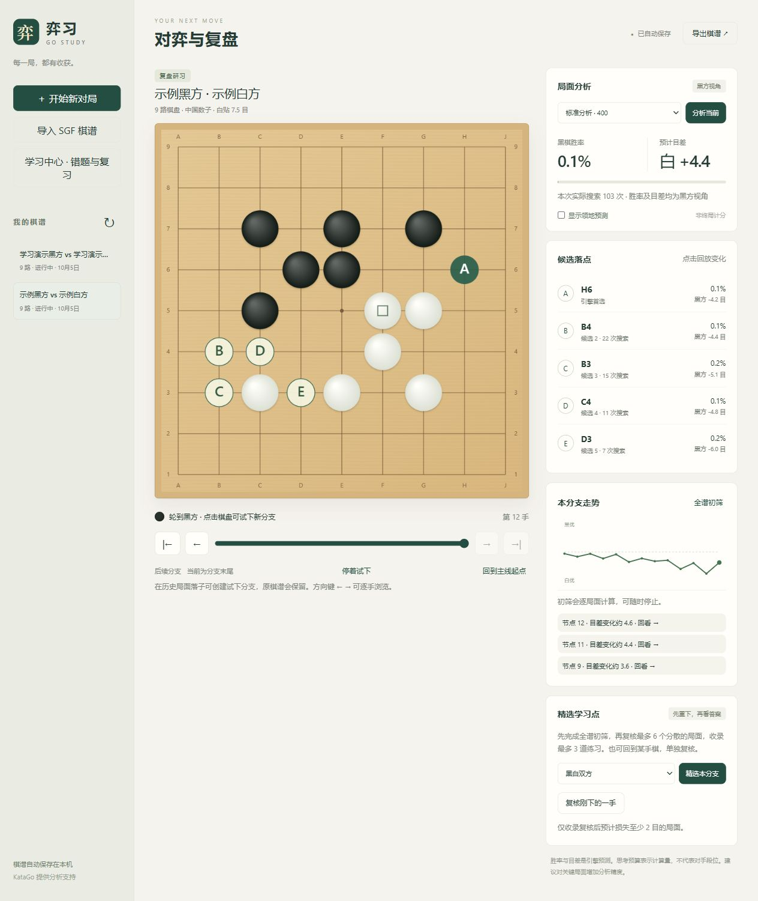
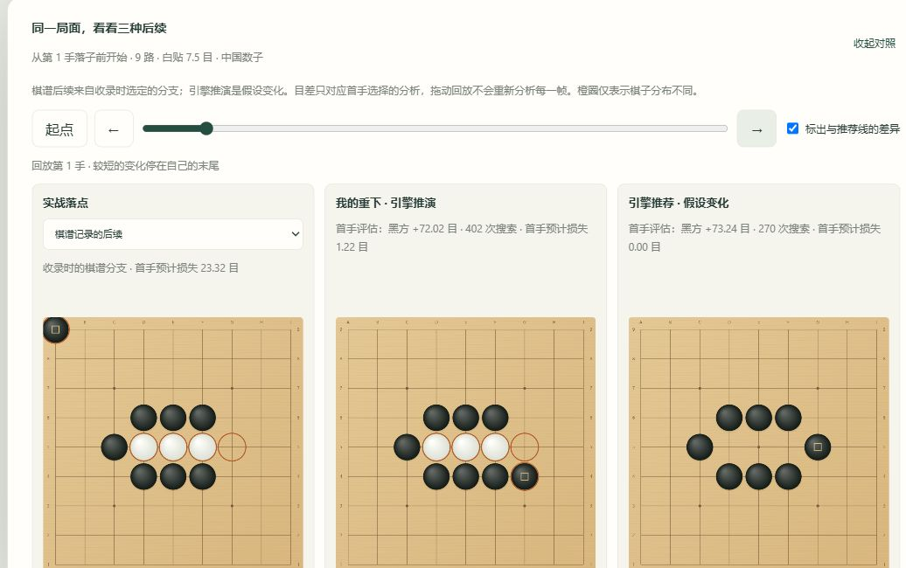
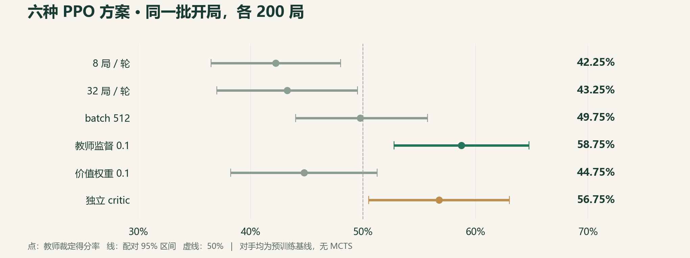

保留原谱，自由试下
候选落点与走势辅助复盘；分支试下保留实战记录，支持 SGF 导入导出。
用 KataGo 找到值得重下的一手。
从复盘、练习到对照，把思考留在棋盘上。Review your games. Practice your next move.
完整解压 · 双击启动 · 棋谱本地保存
Windows 10/11 x64，需要兼容 OpenCL 的显卡驱动。

对弈或导入 SGF，精选关键局面，独立作答后再看变化。笔记、手动标签与到期复习，串起每次练习。
候选落点与走势辅助复盘；分支试下保留实战记录，支持 SGF 导入导出。
把关键一手收进练习库。重新搜索核对答案，接近参考的其他下法也可通过。
同步回放实战、自己的选择与引擎推荐，观察局面差异，再记录自己的理解。

约 32 万参数，以 KataGo 为教师，走完预训练、PPO 后训练和对照评估。每一步保留参数、日志与负结果。
预训练教师首选一致率
2.91% → 27.37%
最终 PPO 候选新批次得分 56.25%，95% 区间 49.75%–62.75%，仍包含 50%。这是教师裁定得分，无 MCTS，不是段位或已证明的稳定棋力提升；训练模型未替换产品引擎。
查看实验与结果边界 ↗
YixiGo.exe，浏览器自动打开本地软件。Python、KataGo 和模型已内置。本版需要 OpenCL 显卡驱动，无 CPU 后备引擎。程序未代码签名，Release 提供 SHA-256 校验文件。
本网站是静态项目展示页；对弈、分析与个人数据管理在下载的本地软件中运行。
首次启动创建空库。每台电脑、每个 Windows 账户独立保存棋谱与练习记录，没有云同步。
数据目录：%LOCALAPPDATA%\YixiGo
同一 Windows 账户共用数据；数据库未额外加密。退出软件后复制数据目录即可备份。